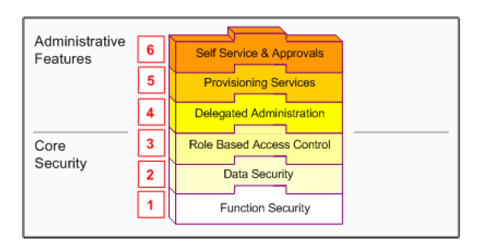

Oracle User Management is a secure and scalable system that enables organizations to
define administrative functions and manage users based on specific requirements such
as job role or geographic location. With Oracle User Management, instead of exclusively
relying on a centralized administrator to manage all its users, an organization can create
local administrators and grant them sufficient privileges to manage a specific subset of
the organization's users.
Core Security and Administrative Features are implemented in successive layers and
each builds upon the one that precedes it. Organizations can optionally uptake the
various layers, depending on the degree of automation and scalability that they wish to
build upon the existing Function and Data Security models.
Oracle's function and data security models constitute the base layers of this system, and
contain the traditional system administrative capabilities. Organizations can optionally
add more layers to the system, depending on the degree of flexibility they require.
??Oracle Application Object Library security comprises two main components, Function
Security and Data Security.
Key features of Oracle User Management include:

- function security
Function Security restricts user access to individual menus of functions, such as forms,
HTML pages, or widgets within an application. Function Security by itself restricts
access to various functions, but it does not restrict access to the data a user can see or
what actions a user can perform on that data.
- data security
Data Security restricts the access to the individual data that is shown once a user has
selected a menu or menu option. For example, with Data Security you can control the
set of users that a particular local security administrator can access within Oracle User
Management. In conjunction with Function Security, Data Security provides additional
access control on data that a user can see or actions a user can perform on that data.
Data Security policies can only be defined for applications that have been written to utilize the Data Security
Framework.
- Role Based Access Control (RBAC)
Enables organizations to create roles based on specific job functions, and to assign these roles the appropriate permissions. With
RBAC, administrative privileges and user access are determined by assigning
individuals the appropriate roles.
- Delegated (tafweed) Administration
Enables system administrators to delegate some of their administrative privileges to individuals that manage a subset of the
organization's users. These individuals are assigned administrative privileges for a limited set of roles that they can assign to the users they manage.
- Registration Processes
Enable organizations to provide end-users with a method for requesting various levels of access to the system, based on their eligibility.
Registration processes also simplify an administrator's job by providing
streamlined flows for account maintenance and role assignment.
- Self Service Requests and Approvals - Enable end users to request initial access or
additional access to the system.
User and Data Auditing
Oracle Applications allows you to audit users and changes they make to application
data.
The Sign-On Audit feature allows you to track your users' activities. You can choose
who to audit and what type of user information to track.
Sign-On Audit reports give you historical, detailed information on your users' activities within an application. Also,
the Monitor Users form allows you to view online, real-time information on user
activity.
AuditTrail lets you keep a history of changes to important data: what changed, who
changed it, and when.You can track information on most types of fields, including character, number, and date fields.